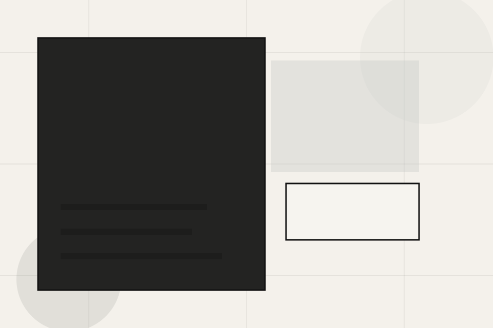
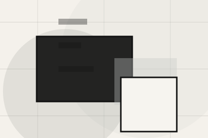
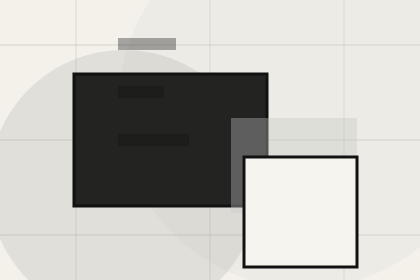
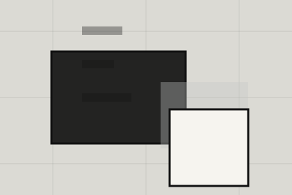

Fit
Who the offer is for, which scope it suits, and when a different route may be better.
Insights / 01
Insights opens as a clear architecture decision hub: what Craft offers, who it helps, why it matters, and which route to take first.
The first screen combines positioning, proof, primary action, and fast internal navigation, so people can act immediately or compare the rest of the insights route with context.
Minimal full-bleed project hero
Select the closest route and Craft keeps the next step, proof, and follow-up expectation aligned with taste and design authority.

Insights / 02
Design gives researching visitors a practical route into guides, checklists, and comparison material without leaving the site structure.
Each resource behaves like a useful internal link, giving cold and warm visitors a way to learn, compare, and return to the action path.
Explore InsightsA useful entry point for visitors who need more context before they discuss the project.
A scannable comparison aid that makes research usable before the next decision.
A route back to support, services, or contact when the visitor is ready to act.
Insights / 03
Planning makes commercial comparison easier by showing fit, scope, and terms before architecture visitors ask for the next step.
The layout keeps price-sensitive decisions honest: it separates starting scope, fuller delivery, and ongoing support so the visitor can ask a sharper question.
Explore Insights
Who the offer is for, which scope it suits, and when a different route may be better.
Insights / 04
Sustainability gives researching visitors a practical route into guides, checklists, and comparison material without leaving the site structure.
Each resource behaves like a useful internal link, giving cold and warm visitors a way to learn, compare, and return to the action path.
Explore InsightsA useful entry point for visitors who need more context before they discuss the project.
A scannable comparison aid that makes research usable before the next decision.
A route back to support, services, or contact when the visitor is ready to act.
Insights / 05
Materials gives researching visitors a practical route into guides, checklists, and comparison material without leaving the site structure.
Each resource behaves like a useful internal link, giving cold and warm visitors a way to learn, compare, and return to the action path.
Explore InsightsA useful entry point for visitors who need more context before they discuss the project.
A scannable comparison aid that makes research usable before the next decision.

A route back to support, services, or contact when the visitor is ready to act.
Insights / 06
Urbanism gives researching visitors a practical route into guides, checklists, and comparison material without leaving the site structure.
Each resource behaves like a useful internal link, giving cold and warm visitors a way to learn, compare, and return to the action path.
Explore InsightsA useful entry point for visitors who need more context before they discuss the project.
A scannable comparison aid that makes research usable before the next decision.
A route back to support, services, or contact when the visitor is ready to act.
Insights / 07
Cases shows what changes after the work: clearer decisions, visible progress, and proof points that connect the offer to real outcomes.
The layout connects before-and-after thinking with measured outcomes, making the result easy to scan without promising what the business cannot guarantee.
Explore InsightsThe uncertainty, delay, or missed opportunity visitors bring into cases.
The clearer, safer, or more valuable state Craft is designed to support.
The visible cue that connects cases to a believable decision, not a loose claim.
Insights / 08
Journal gives researching visitors a practical route into guides, checklists, and comparison material without leaving the site structure.
Each resource behaves like a useful internal link, giving cold and warm visitors a way to learn, compare, and return to the action path.
View ResourcesA useful entry point for visitors who need more context before they discuss the project.
A scannable comparison aid that makes research usable before the next decision.

A route back to support, services, or contact when the visitor is ready to act.
A useful entry point for visitors who need more context before they discuss the project.
Open resourceA scannable comparison aid that makes research usable before the next decision.
Open resourceA route back to support, services, or contact when the visitor is ready to act.
Open resourceInsights / 09
Ideas gives researching visitors a practical route into guides, checklists, and comparison material without leaving the site structure.
Each resource behaves like a useful internal link, giving cold and warm visitors a way to learn, compare, and return to the action path.
Explore InsightsA useful entry point for visitors who need more context before they discuss the project.
A scannable comparison aid that makes research usable before the next decision.
A route back to support, services, or contact when the visitor is ready to act.
Insights / 10
Craft closes the insights route with a clear action, a quick reminder of the value, and a low-friction way to discuss the project.
Visitors who are ready can use the primary action. Visitors who are still comparing can scan the section links, proof, and support routes before they discuss the project.
Discuss ProjectThe final block keeps the choice simple: act now, compare one more proof route, or send enough detail for a focused response.
Discuss Projecttaste and design authority
A spatial portfolio site with minimal chrome, full-bleed project moments, thin metadata, and studio enquiry. Insights ends with a direct path to discuss the project, plus enough context for visitors who still need to compare.

Discuss ProjectInformation is provided for planning and should be reviewed for the final client, location, and operating rules.